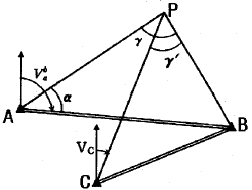
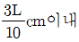
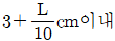
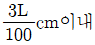
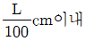
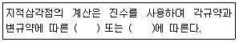
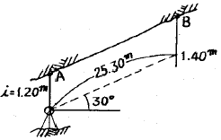
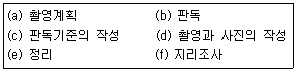
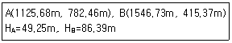
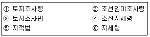

1과목: 지적측량
1. 평판측량방법에 따라 조준의를 사용하여 경사거리를 측정한 결과가 아래와 같은 경우 수평거리로 옳은 것은? (단, 경사거리는 82.1m, 경사분획은 6.5이다.)
2. 각의 측량에 있어 A는 1회 관측으로 60°20‘38“, B는 4회 관측으로 60°20’21”, C는 9회 관측으로 60°20‘30“의 측정결과를 얻었을 때 최확값으로 옳은 것은? (단, 경중률이 일정한 경우이다.)
3. 아래 그림과 같은 교회망에서 Vab=125°, 관측내각이 α=60°, γ=75°, γ‘=30°일 때 점 C에서 점 P에 대한 방위각(Vc) 크기는 얼마인가?

4. 다음 중 지적삼각보조점성과표에 기록ㆍ관리하여야 하는 사항에 해당하지 않는 것은?
5. 다음 중 지번 및 지목의 제도에 대한 설명으로 옳지 않은 것은?
6. 경위의측량방법으로 세부측량을 하였을 때 측량대상 토지의 경계점간 실측거리와 경계점의 좌표에 의하여 계산한 거리의 교차는 최대 얼마 이내이어야 하는가? (단, L은 실측거리로서 m단위로 표시한 수치를 말한다.)




7. 다음 중 분할 후의 각 필지의 면적의 합계와 분할 전 면적과의 오차의 허용범위를 구하는 식으로 옳은 것은? (단, A:오차허용면적, M:축척분모, F:원면적)
8. 다음 중 도선법에 따른 지적도근점의 각도 관측에서 방위각법에 따른 1등도선의 폐색오차는 최대 얼마 이내로 하여야 하는가? (단, n은 폐색변을 포함한 변의 수를 말한다.)
9. 배각법에 의한 지적도근점측량을 한 결과, 출발기지 방위각이 128°08‘33“, 측정된 내각의 합이 1909°38’48”, 도착기지방위각이 57°47‘30“일 경우 각오차(측각 오차)는? (단, 폐색변을 포함한 변의 수는 12개이다.)
10. 다음 중 평판측량방법에 따른 세부측량을 교회법으로 하는 경우의 기준 및 방법에 대한 설명으로 옳지 않은 것은?
11. 다음 중 지적삼각점의 계산과 관련한 아래의 설명에서 ()에 들어갈 수 있는 것으로 옳은 것은?

12. 전파기측량방법에 따라 다각망도선법으로 지적삼각보조점 측량을 하는 때에 1도선의 점의 수는 기지점과 교점을 포함하여 최대 얼마 이하로 하여야 하는가?
13. 다음 중 경계의 제도방법 기준에 대한 설명으로 옳은 것은?
14. 다음 중 경위의측량방법에 따른 지적삼각점의 관측에서 수평각의 측각공차 기준이 옳지 않은 것은?
15. 다음 중 경계점좌표등록부를 갖춰 두는 지역의 측량방법 및 기준에 대한 설명으로 옳지 않은 것은?
16. 다음 중 표준줄자와 비교하여 3.4cm가 짧은 50m 줄자를 이용하여 측정한 거리가 355m 경우 실제거리로 옳은 것은?
17. 다음 중 세부측량을 하는 경우 필지마다 면적을 측정하여야 하는 경우에 해당하지 않는 것은?
18. 평판측량방법에 따른 세부측량을 도선법으로 하는 경우 도선의 페색오차를 각 점에 배분하는 방법으로 옳은 것은?
19. 축척변경 시행지역에서 경위의측량방법에 따른 세부측량을 실시할 경우, 측량결과도는 얼마의 축척으로 작성하여야 하는가? (단, 시ㆍ도지사의 승인을 얻는 경우는 고려하지 않는다.)
20. 다음 중 지적도근점측량의 방법 및 기준에 대한 설명으로 옳지 않은 것은?
2과목: 응용측량
21. 축척 1:500 지형도를 기초로 하여 같은 크기의 축척 1:2500의 지형도를 작성하려 한다. 1:2500 지형도의 한 도면을 작성하기 위해서 필요한 1:500 지형도의 매수는?
22. 간접수준측량에서 지구의 평균반경을 6370km로 하고, 수평거리가 2km일 때 지구곡률오차는?
23. 단곡선 설치에 있어서 접선과 현이 이루는 각을 이용하여 곡선을 설치하는 방법으로 가장 널리 사용되는 방법은?
24. 도로의 시작점부터 1234.30m 지점에 교점(I.P)이 있고 반경(R)은 150m, 교각(I)은 60°일 경우 접선장(T.L)과 곡선장(C.L)은?
25. 터널내에서 천장에 고정점 A, B를 관측한 결과가 그림과 같을 때 두 지점간의 고저차는?

26. 곡률반경이 현의 길이에 반비례하는 곡선으로 시가지 철도 및 지하철 등에 주로 사용되는 완화곡선은?
27. 클로소이드 곡선에 대한 설명으로 옳지 않은 것은?
28. 지성선 중에서 빗물이 이것을 따라 좌우로 흐르게 되는 선으로 지표면이 높은 곳의 꼭대기 점을 연결한 선은?
29. 카메라의 초점거리가 153mm, 촬영 경사각이 3.6°로 평지를 촬영한 항공사진이 있다. 이 사진의 등각점은 주점으로부터 최대경사선상 몇 mm인 곳에 있는가?
30. 항공사진 판독의 기본요소로 볼 수 없는 것은?
31. 사진상의 주점이나 표정점 등 제점의 위치를 인접한 사진상에 옮기는 작업은?
32. 완화곡선의 성질에 대한 설명으로 옳지 않은 것은?
33. 영상정합의 종류에서 객체의 점, 선, 면의 밝기값 등을 이용하는 정합은?
34. 항공사진측량의 일반적인 작업순서로 맞는 것은?

35. GPS측량에서 의사거리 결정에 영향을 주는 오차의 원인으로 거리가 먼 것은?
36. 터널측량을 하여 터널 시점(A)와 종점(B)의 좌표가 다음과 같을 때, 터널의 경사도는?

37. 단일 주파수 수신기와 비교할 때, 이중 주파수 수신기의 특징에 대한 설명으로 옳은 것은?
38. 입체시에 의한 과고감에 대한 설명으로 옳은 것은?
39. 도로의 직선부와 원곡선을 원활하게 연결하기 위하여 설치하는 곡선은?
40. 지형도의 지형 표시 방법과 거리가 먼 것은?
3과목: 토지정보체계론
41. 다음 중 벡터자료의 공간객체로 가장 거리가 먼 것은?
42. 다음 중 필지식별번호에 관한 설명으로 옳지 않은 것은?
43. 다음 중 한국토지정보시스템(KLIS)에 대한 설명으로 옳은 것은?
44. 다음 중 한국토지정보시스템(KLIS) 개발의 기대 효과로 옳지 않은 것은?
45. 다음 중 토지기록전산화의 목적으로 보기 어려운 것은?
46. 다음 중 격자구조의 압축 방법에 해당하지 않는 것은?
47. 다음 중 관계형데이터베이스에서 자료의 추출(검색)에 사용되는 표준언어인 비과정 질의어는?
48. 다음 중 벡터 자료구조에 비하여 래스터 자료구조가 갖는 장ㆍ단점으로 옳지 않은 것은?
49. 다음 중 메타데이터(Metadata)에 대한 설명으로 옳지 않은 것은?
50. 다음 중 공간상에 알려진 표고값이나 속성값을 이용하여 표고나 속성값이 알려지지 않은 지점에 대한 값을 추정하는 공간분석 기법은?
51. 다음의 지적관련 정보 중 도형자료로 활용하기에 가장 적합한 것은?
52. 다음 중 데이터베이스의 스키마를 정의하거나 수정하는데 사용하는 데이터 언어는?
53. 다음 중 임야도의 도형자료를 스캐너로 편집한 자료형태는?
54. 다음 중 PBLIS의 개발 목적으로 옳지 않은 것은?
55. 다음 중 속성자료의 입력 방법으로 옳은 것은?
56. 다음 중 경계선의 이중입력으로 서로 다른 폴리곤이 중첩되어 발생하는 불필요한 폴리곤을 무엇이라고 하는가?
57. 다음 중 필지중심토지정보시스템(PBLIS)의 구성에 해당하지 않는 것은?
58. 다음 중 객체지향형데이터베이스 관리체계(OODBMS)의 특징에 대한 설명이 옳지 않은 것은?
59. 다음 중 특정 공간데이터를 중심으로 일정한 거리 또는 영역을 설정하여 분석하는 공간분석 방법은?
60. 다음 중 사용자권한 등록파일에 등록하는 사용자의 권한에 해당하지 않는 것은?
4과목: 지적학
61. 다음 중 지적공개주의를 실현하는 방법으로 옳지 않은 것은?
62. 다음 중 결수연명부에 관한 설명으로 옳은 것은?
63. 다음 중 토지의 사정(査定)에 대한 설명으로 옳지 않은 것은?
64. 다음 중 토지등록제도의 유형에 포함되지 않는 것은?
65. 다음 중 전지(田地)를 측량할 때 정방형의 눈들을 가진 그물을 사용하여 전지가 그물 속에 들어온 그물눈을 계산하여 면적을 산출하는 방법은?
66. 다음 중 토렌스시스템의 기본이론인 거울이론에 대한 설명으로 옳은 것은?
67. 다음 중 우리나라 토지소유권 보장제도의 변천순서가 바르게 나열된 것은?
68. 간주지적도에 등록된 토지는 토지대장과는 별도로 대장을 작성하였다. 다음 중 그 명칭에 해당하지 않는 것은?
69. 다음 중 토지거래의 안전을 도모하여 토지의 소유권 보호를 주요 목적으로 하는 것으로 소유지적이라고도 하는 것은?
70. 다음 중 두문자(頭文字) 표기방식의 지목이 아닌 것은?
71. 다음 중 최초로 부동산(토지) 등기부를 작성할 때 등기내용을 확인하는 기초 장부로 사용하였던 것은?
72. 다음 중 조선시대의 경국대전에 명시된 토지등록제도는?
73. 다음 중 지적이란 2000년 전의 라틴어 카타스트럼(catastrum)에서 그 근원이 유래되었다고 주장한 학자는?
74. 다음 중 지적의 형식주의에 대한 설명으로 옳은 것은?
75. 다음 중 우리나라 지적법의 변천 과정을 옳게 나열한 것은?(오류 신고가 접수된 문제입니다. 반드시 정답과 해설을 확인하시기 바랍니다.)

76. 다음 중 토지조사사업 당시의 재결기관으로 옳은 것은?
77. 다음 중 1단지마다 하나의 본번을 부여하고 단지 내 필지마다 부번을 부여하는 방법으로, 토지구획 및 농지개량사업 시행지역 등의 지번설정에 적합한 것은?
78. 다음 중 일반적인 지목의 설정원칙에 해당하지 않는 것은?
79. 다음 중 대한제국시대에 3편(片)으로 발급한 관계(官界)를 보존하는 기관(사람)에 해당하지 않는 것은?
80. 다음 중 수치지적에 비하여 도해지적이 갖는 단점으로 가장 거리가 먼 것은?
5과목: 지적관계법규
81. 부동산등기법상 토지의 분합, 멸실, 면적의 증감 또는 지목의 변경이 있어 그 등기를 신청하는 경우 등기신청서에 첨부하여야 하는 것은?
82. 국토의 계획 및 이용에 관한 법률에 따른 용도지구에 대한 설명으로 옳지 않은 것은?
83. 부동산등기법상 토지 소유권의 등기명의인이 1개월 이내에 그 등기를 신청하여야 하는 경우가 아닌 것은?
84. 도시개발법에 따른 도시개발사업으로 인하여 토지의 이동이 필요한 경우, 토지의 이동은 언제 이루어진 것으로 보는가?
85. 중앙지적위원회의 구성 등에 관한 설명으로 옳은 것은?
86. 다음 중 등기신청서에 채권액과 채무자를 기재하여야 하는 설정등기는?
87. 국토의 계획 및 이용에 관한 법률에 따른 용도구역에 해당하지 않는 것은?
88. 지적측량업자는 등록사항이 변경된 경우 누구에게 신고하여야 하는가?
89. 지적도 및 임야도에 등록하여야 하는 사항에 해당하지 않는 것은?
90. 축척변경위원회의 구성에 대한 설명으로 옳지 않은 것은?
91. 토지소유자는 지목변경을 할 토지가 있으면 대통령령으로 정하는 바에 따라 그 사유가 발생한 날부터 몇 일 이내에 지적소관청에 지목변경을 신청하여야 하는가?
92. 지적소관청이 등록사항을 정정할 때 토지소유자에 관한 사항은 다음 중 무엇에 의하여 정정하여야 하는가?
93. 토지의 이동을 조사하는 자가 측량 또는 조사 등에 필요하여 토지등에 출입하거나 일시 사용함으로 인해 손실을 받은 자가 있는 경우의 손실보상에 대한 설명으로 옳지 않은 것은?
94. 부동산등기법상 등기할 사항 중 어느 하나에 해당하는 권리의 설정, 이전, 변경 또는 소멸의 청구권을 보전하려는 때에 행하는 등기는?
95. 다음 중 지적공부의 복구 사유에 해당하는 것은?
96. 지적측량업의 등록을 할 수 없는 결격사유(기준)로 옳지 않은 것은?
97. 다음 중 지적 관련 법률에 따른 ‘토지의 표시’에 해당하지 않는 것은?
98. 지적소관청이 지적공부의 등록사항에 잘못이 있음을 발견한 때 직권으로 조사ㆍ측량하여 정정할 수 있는 경우로 옳지 않은 것은?
99. 다음 중 지적서고의 연중 평균온도 및 연중 평균습도에 대한 기준이 옳은 것은?
100. 축척변경에 따른 청산금의 납부고지 등에 관한 설명으로 옳은 것은?